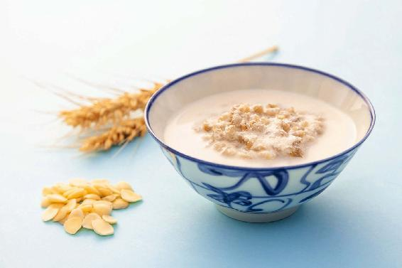
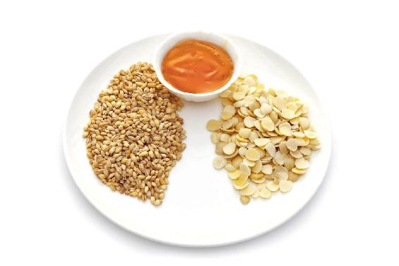
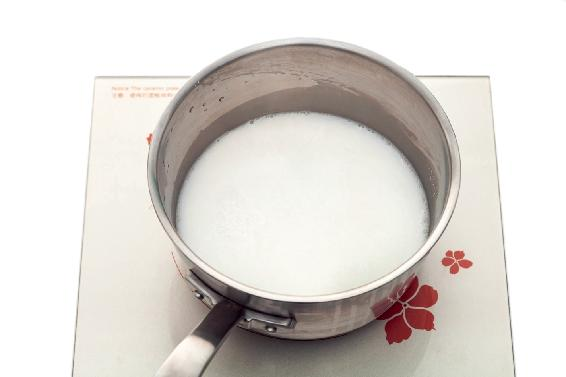
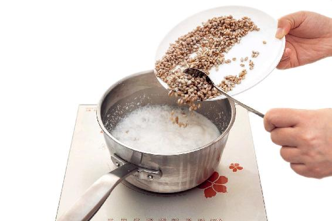

在以前，寒食节是要连过三天的，而清明节的前三天，都是寒食节。
从清明节开始，我们进入春天的第三个月，所以清明节是暮春的起点，而寒食节则是仲春的结束。
在敦煌发现的唐代文书中，有一首唐代诗人王泠（líng）然写的《寒食篇》:“天运四时成一年，八节相迎尽可怜。秋贵重阳冬贵蜡（zhà），不如寒食在春前。”
就是说一年的八节——立春、立夏、立秋、立冬、春分、秋分、冬至、夏至，加上秋天的重阳节、冬天的腊八节，它们都不如寒食节重要。这说明当时的人们都非常重视寒食节。实际上在唐代，从宫廷到民间，都会隆重地来过寒食节。
寒食节比清明节的历史要久远得多，它是一个非常古老的节日，可以一直追溯到远古时期的火神崇拜。
远古时期，人们没有计时工具，他们只能通过夜观天象来确定季节。每年春天，当人们看见大火星出现在东方的天空上，就知道新的一年开始了，春天又来了。
这颗大火星是什么呢？
之前，我讲过古人把天上的二十八星宿分成四组，每组有七个星宿，每组的七个星宿组成一个动物，按照方位顺序分别是左青龙、右白虎、前朱雀、后玄武。其中，处在龙心脏部位的星宿，即心宿一、心宿二、心宿三。其中，心宿二就是大火星。
心宿二这颗大火星，其实就是西方所说的天蝎座中的阿尔法星（天蝎座α星)。西方人认为这颗星是天蝎座蝎子的心脏，因为这颗恒星非常独特，它是红色的，而且非常亮，它的亮度是太阳的10000倍。当它出现在东方的天空上，是非常明显的。
我曾经试着在南方空气比较好的地方观察这颗耀眼的大火星，在初夏日落之后，这颗星星会非常明显地出现在东南方的天空上，是我们肉眼清晰可见的，又红又亮。
假如您所在的城市空气质量比较好，能够看到天上的群星，您不妨也抬头看一看这颗最亮的红星。
当您带孩子观看的时候可以给他讲讲，太阳系的八大行星之一火星，也是红色的。大火星与它很好区别。火星是行星，它的光是稳定的，不会闪烁；而大火星是恒星，它的光芒是一闪一闪的。
有一首老歌里唱道“红星闪闪放光彩”“红星闪闪迎春来”，我觉得用来形容大火星太合适不过了。闪闪的红星出现在东方时，正是春天到来之时。
大火星其实是古人非常关注的一颗恒星，在上古时期，甚至还设了一个官职，专门观察这颗恒星的运行规律，根据每天黄昏时大火星出现在天空的位置来确定季节，通过它的运行时间来确定一年的历法。
《诗经》里有两句诗很有名，叫“七月流火，九月授衣”。不少人会望文生义地把“七月流火”解释成天气很酷热。
实际上，“七月流火”是指天气逐渐变凉了，“火”在这里指的是大火星，“流火”就是大火星慢慢地在向西方坠落。
大火星是春出秋隐的，在春天时它会出现，秋天时它会逐渐向西坠落，越来越低，最后隐没在地平线之下。
当古人发现大火星开始逐渐向西方坠落的时候，就知道秋天来了，天气要凉了，得准备过冬的衣服了。这就叫“七月流火，九月授衣”。
现在的人为什么会把“七月流火”用错呢？因为我们离自然越来越远了，很少去抬头看天了，也不再关心四季的变化了。
明末清初的著名学者、大思想家顾炎武，写过一本叫《日知录》的书。他写道：“三代以上，人人皆知天文。‘七月流火’，农夫之辞也。”意思就是说，在上古时期，每一个人都是懂天文的。“七月流火”不过就是农夫经常挂在嘴边说的话而已。
如今，我们连古代的农民都不如了，希望现代的人，能知悉一些天象，了解一些节日的起源。如果能像古人一样恢复跟自然的紧密联系，时时跟随自然的脚步，那我们的身体也就能自然地调节到健康状态。
每年的寒食节，“七月流火”中的这个大火星就会在东南方的天空升起。古人会把它跟火联系在一起，认为它是火神。
在这时，国家要禁火，为什么呢？这里面有很多说法，比较可信的是以下两种。
1.春天是风季
春天是风季，要防风防火。所以在周代的时候，会有专门负责的官员到各地去敲木铃，提醒人们注意防火。
2.要改火：每个季节要改用不同的木材来烧火
古人有改火的习俗。什么叫改火呢？古人一年四季用来烧火做饭的木柴是有讲究的，并不是一直只烧一种木柴，这有两个原因：
一是如果一直只用一种木柴，可能会造成这种树木资源的枯竭，这是出于保护的目的。
二是焚烧不同的木材所散发的气味，对我们身体的影响是不一样的。古人认为，每个季节都要改用不同的木材来烧火做饭，这样才有利于身体健康。
我觉得，古人对生命的体察真的是太细致入微了。与古人相比，我们可能太不讲究了。做饭用天然气、煤气，还是用电磁炉，都不讲究了。
其实，不同的取火方式，以及它们所散发出的不同的气味，对于我们的身体都有不同的影响。
古人在春天会取榆树和柳树的火；在夏天取枣树和杏树的火；在长夏会取桑树和柘（zhè）树的火；秋天会取柞（zuò）树和楢（yóu）树的火；冬天会取槐树和檀树的火。不同季节用的木材都是不一样的，这里面有很多讲究。
春天的时候，古人取榆树和柳树的火，由此还演变出寒食折柳的习俗。在寒食节的时候，每家每户都要折一节柳枝，插在自己家屋檐下面做装饰，这是非常有意思的。
燃烧不同的木材所产生的烟气，对人体健康的不同影响，古人都有细致入微的观察。在生活中，各种气味对健康的影响，我们也要有一个敏锐的觉察。很多朋友可能对于这些气味对健康有什么危害，危害程度有多大，没有一个很真切的认识。
当我们使用香薰疗法，或者品花草茶，或者吃一些带有香味的食物的时候，对于嗅闻它们的香气对人体健康的好处，我们也可以更多地去了解。
寒食节，古人为什么要禁火？其中一个原因就是防火灾，因为这个时节多风。风为百病之长，风会携带各种病邪侵入人体。
在这个时节，风还夹带着热，风热侵袭人体后，最容易引起咽喉和鼻子的问题。这时候如果一个人受凉感冒了，会迅速转化为风热感冒,最明显的就是会觉得咽喉肿痛。
有些朋友在这个时候经常口干舌燥、心里烦热，一定要多吃一些能祛风燥、除烦热的滋润饮食，要吃一些清润之品，这样既可以给身体祛风祛燥，又不会滋补过度。
这个时节很适合吃一些米、麦等粮食类的食物，它们也是寒食节的民俗里特别推崇的。
古人说：“人法地，地法天。”天，也包括天文、天象。如果能像古人一样，时时刻刻密切关注天地之间的变化，遵循自然的规律来生活，那么，我们的身体也就可以按照自然界生长收藏的节律来运行，达到健康平衡的状态。
以上就是寒食节对现代养生的一个启发。
寒食节的文化内涵是非常深远的，但它的名字却很直白，它应该是唯一的一个在传统节日中用吃来命名的节日。而元宵节虽然吃的是元宵，却是食物因节而名，元宵的本义是新年的第一个月圆之夜。
寒食，顾名思义就是吃冷食。
在古代，寒食节的时候家家户户是不生火的，都要吃事先做好的冷食。历代以来，寒食节的饮食花样还真不少，有的是从传说演变而来的，比如，北方地区的某些地方，会用面团捏成鸟的形状蒸熟了来吃，这来自商代人的传说——“天命玄鸟，降而生商”。传说，商人的祖先是玄鸟，玄鸟就是黑色的鸟，也就是燕子。还有一些寒食，是从祭祀的供品演变而来的。
在各地的寒食节饮食里，有寒食饼、寒食面、寒食浆。虽然寒食都不一样，但有一个共同点：基本都是素食，而且所用材料以米、麦等粮食为主。这些粮食都是甘味的，符合了“春吃甘，脾平安”的养生之道。

1.寒食节的饮食，最好喝的不过寒食平安粥
在寒食节的饮食中，古人最爱喝的是一道寒食平安粥。
这道粥的历史有将近两千年了，这里面的文化内涵也是很深厚的。它有一个应时养生的作用，我就给它取了一个名字，叫作寒食平安粥。
如果您家里有豆浆机，那就更方便了，把泡好的大麦仁和杏仁放到豆浆机里，加水，开机煮熟，最后加麦芽糖或者蜂蜜来调味。
甜杏仁，我们是不拿它当零食吃的，因为它必须做熟了才可以吃，一般都是做成凉菜，也可以煲汤。
寒食平安粥用甜杏仁，就是取它滋养肺部的作用。同时，它对慢性支气管炎也有调理作用。
2.根据体质来选择寒食平安粥里的原料
一般来说，我们可以按照自己的喜好来放。当然，也可以根据自己身体的体质来调配。
如果您平时容易消化不良，或者吃东西以后容易腹胀，或者大便稀溏，那您就多放一些麦仁。
如果您平时呼吸道不是很好，经常地咳、喘，有痰，或者大便干燥、便秘，那您就多放一些甜杏仁。
这道粥里的麦芽糖的功效主要是健脾、养胃。脾胃虚弱的朋友，特别是胃寒的朋友，还有家里有小孩的朋友，最好粥里都放点麦芽糖。但如果您是胃热的朋友，那您就可以选择往粥里加蜂蜜。
这道寒食平安粥是很清润的，它既能滋补，又能消食，还能排毒，符合春天食养不宜滋腻过补的原则。
寒食平安粥

原料：大麦仁、杏仁、麦芽糖（或者蜂蜜）。

做法：
1.把大麦仁和杏仁泡一晚上，然后把杏仁放到料理器里加清水打成浆。

2.打好的杏仁浆和大麦仁一起煮熟，可以用小火多煮一会，最好是把大麦仁煮到软烂开花的程度。关火前，加一点麦芽糖或蜂蜜来调味。
允斌叮嘱：
1. 这道粥里所用的大麦仁、杏仁在超市就可以买到。要注意，超市里卖的平时可以当零食吃的大杏仁，其实不是真正的杏仁，它是扁桃仁。真正的杏仁是中国杏仁，它小小的，是心形的。
2. 中国杏仁又分为两种，一种是甜杏仁，一种是苦杏仁。甜杏仁是做粥所需要的，您可以到超市去买。如果您去药店买杏仁，一般会给您苦杏仁。苦杏仁是一味处方药，能治咳嗽和气喘，但它有小毒，我们平时千万不要随便去吃它。
3. 甜杏仁只有小拇指的指甲盖儿那么大，但它比苦杏仁偏胖一些，偏补一些。甜杏仁是补气的，也有润肺和润肠的作用。
3.寒食平安粥，老人、小孩都能喝
这道粥适合的人群也比较广泛，老人、小孩和身体虚弱的人都可以喝。
春天是一个多风的季节，这道粥可以帮助我们祛风燥、祛热。
春天患了风热感冒的朋友，在感冒好了之后，往往会有一段时间喉咙不舒服，这时候就可以喝这道粥来润一润、补一补。
更年期的女性喝这道粥也很有好处。处在更年期的女性，如果晚上睡得不安稳，心里很烦热，这种情况下，粥里要多放点麦仁，因为麦仁对于除烦热有很好的效果。
平时经常口干舌燥、皮肤干的朋友，也可以往粥里多加些杏仁，杏仁有很好的滋润皮肤的作用。患慢性气管炎的朋友也可以喝这道粥来调理，粥里可以多放一点杏仁，效果会更好。
虽说这道粥用麦芽糖或者蜂蜜都可以调味，但如果您不是胃热或者内热特别重的朋友，最好用麦芽糖来调味，因为麦芽糖健脾的效果比较好。而且麦芽糖是偏温性的，正好平衡杏仁的凉性，使这道粥的性质更为平和。
唐代大诗人白居易有两句描写寒食节令的诗：“寒食非长非短夜，春风不热不寒天。”
寒食节在春分之后，这时候昼夜几乎相等，所以寒食节的夜晚是非长非短，就是不长不短的。这时候阴阳各一半，所以春风也是不热不寒的。这样平和的节令，最适合喝一些平和的粥品，既能滋补，又能排毒；既能清润，又能消食。
我之所以给这道寒食粥取名为寒食平安粥，就是因为这个“平”字代表着平和、平衡。在这样一个历史久远的节日里，一家人都喝这一道传承了将近两千年的粥品，是很美好的。
读者评论：寒食平安粥非常香甜
宋会友：昨天喝了寒食平安粥，非常香甜。
允斌解惑：把寒食平安粥的材料加到顺时粥里煮，可以吗？
小草：今天早晨做了寒食平安粥，放了茯苓粉，还能放蜂蜜吗？
允斌：能的。
Fenny：老师，我把寒食平安粥的材料加到顺时粥里煮了，不知道可不可以。
允斌：可以的。